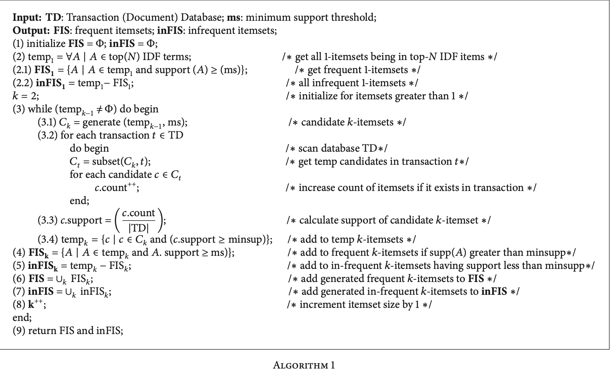

关于DM的process model一般有如下几种：
1.CRISP-DM 跨行业数据挖掘标准流程，将一个KDD工程分为6个不同的阶段。这种方式只定义了要做什么没有说how to do
- 商业理解：确定商业的目标，发现影响结果的重要因素。
- 数据理解
- 数据准备
- 建模
- 评估
- 部署
一. Association Rules
传统的，根据支持度和置信度，挖掘出频繁项集。但是很显然的会面临很多问题。
1) 低频次的并不代表不重要，他们可能能产生出重要的negative association rules (NARs)。 低频购买换个角度就是高频不购买
2) 个人感觉频繁项集不一定是有价值信息的
1 经典AR
先说下基本定义，
| B | not B | 合计 | |
|---|---|---|---|
| A | a | b | a+b |
| not A | C | d | c+d |
| 合计 | a+c | b+d | a+b+c+d |
支持度sup(A=>B) = P(A&B) = a/n
置信度 conf(A=>B) = P(B|A) = a/(a+b)
提升度 lift(A=>B)= p(A&B)/P(A)/P(B) # 是否独立 > 1表明正相关， <1 表示负相关。 可以看做相关系数
一般是设置最低的支持度和置信度，一旦满足这两个就认为是一条rule.
用这种方式得到的结果很可能是不可信的，或者说不全面的，比如如下的一个具体例子。可知sup(A=>B)= 0.45, conf(A=>B)=0.9. 看似较高，但是没法得出 买了A就买B的结论，因为不买A=>买B也是一样，或者说买B本身就很高，与是否买A无关。
| B | not B | 合计 | |
|---|---|---|---|
| A | 450 | 50 | a+b |
| not A | 450 | 50 | c+d |
| 合计 | a+c | b+d | a+b+c+d |
相关系数 \(corr_ = \frac{sup(A交B) - sup(A)sup(B)}{\sqrt{supA(1-supA)supB(1-supB)}} \)
通过卡方检验，可以推倒出卡方检验的统计量与corr是一致的。
常用的算法 Apriori， FP-Growth
2 NAR
比如A=> not B
参考【4】中作者方案包括2步：1)首先找到frequent和infrequent的itemset 2)判断是positive还是negative association
具体的
(1) infrequent: 通过IDF加权，过滤掉出现次数非常少的，或者是在不同人之间分布比较均匀的term

(2) 有了这些候选的itemset后，根据定义计算positive或者negative的rule

注意：
A => B 不一定能推出 not B => not A
3 infrequent itemset
high utility infrequent itemsets. 频次不高，但是有更高的价值。UPRI算法(utility pattern rare itemset algorithm)
简单的说，传统的AR是 \(I_1,...I_m => I_{m+1}(sup, conf)\)，而基于utility的是\(I_1,...I_m => Obj(sup, conf, u)\)。 传统的AR其实相当于将频次作为效用的度量。实际中不同的商品所带来的效用是不同，比如当关注cost，profit时候，对零售商来说，高售价的商品就比低售价的商品重要。
区别于传统的基于itemset的ICOA (itemset-correlation-oriented association)，基于目标效用的OOA (objective-oriented utility-based association)mining
related work:
- 由min_sup, min_conf的方式改为 topK的方式
- Sese and Morishita 度量usefulness的方式：利用规则相关系数的显著性
- Han 通过min_l()的方式挖掘topK的closed patterns
参考【5】中挖
2. case
参考【4】中处理
(1)IDF加权,考虑到term不同权重
3.工具
(1) positive association rules—— apriori
python的sklearn中貌似没有直接的apriori工具,在pypi上找到这个efficient-apriori https://pypi.org/search/?q=apriori。 或者在github上搜索 https://github.com/topics/association-rules?l=python
(2) negative association rules ------
可以用一种比较tricky的方法，即对于我们所关心的item，在数据集中添加 not_item项即可。比如基于R的实现 https://subscription.packtpub.com/book/big_data_and_business_intelligence/9781788621878/1/ch01lvl1sec14/negative-association-rules
4.统计显著性
https://github.com/BorgwardtLab/significant-subgraph-mining
参考资料
- A survey of data mining and knowledge discovery process models and methodologies
- A review and analysis on knowledge discovery and data mining techniques(回溯了各种关联规则相关的)
- https://www.ixueshu.com/document/2a80aefb26b9e3e9318947a18e7f9386.html
- Negative and Positive Association Rules Mining from Text Using Frequent and Infrequent Itemsets
- mining high utility itemsets